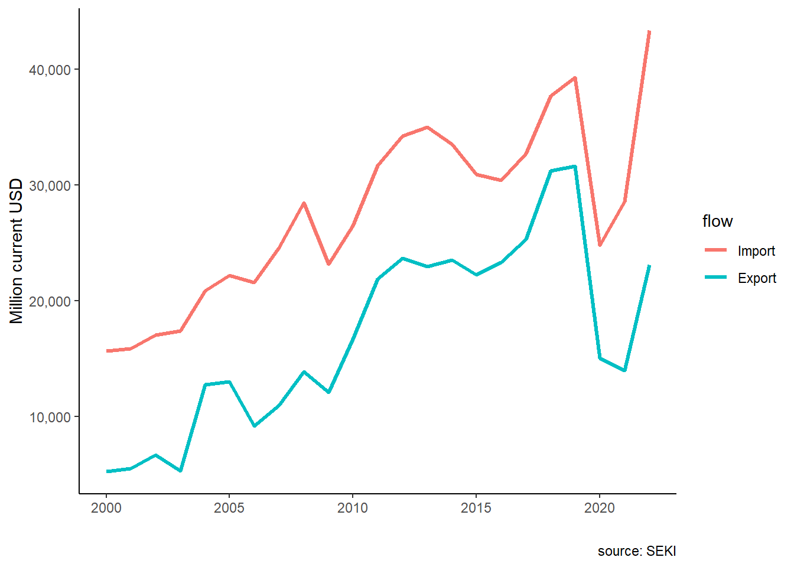
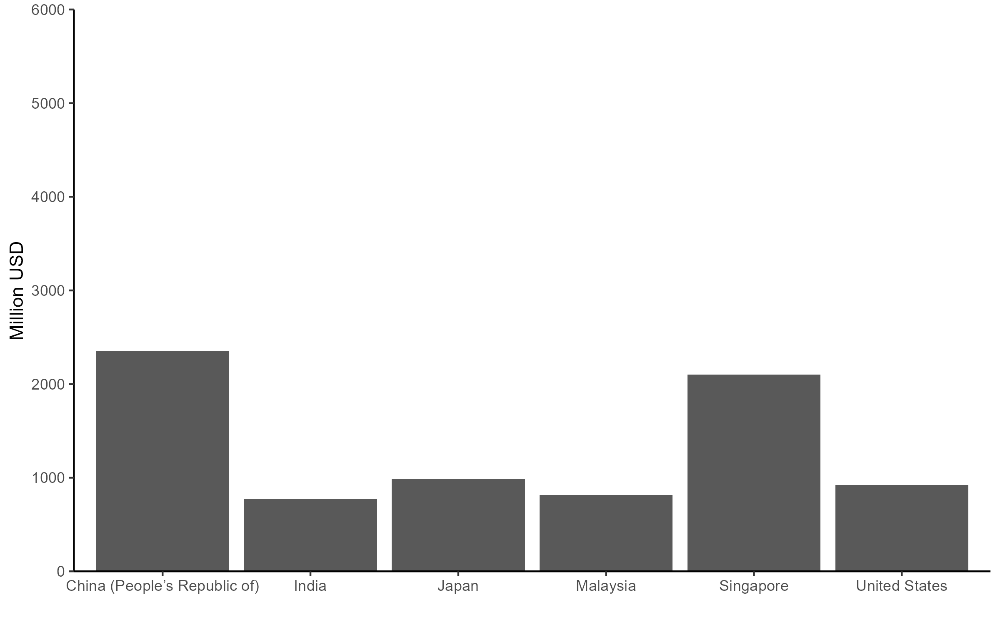
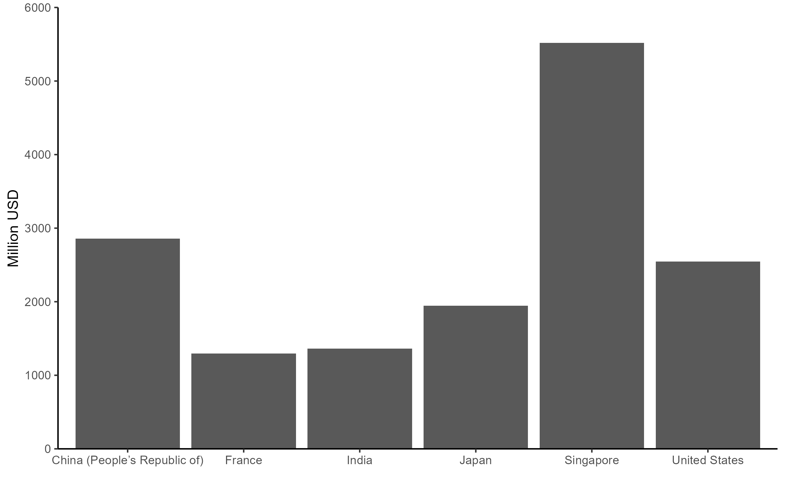
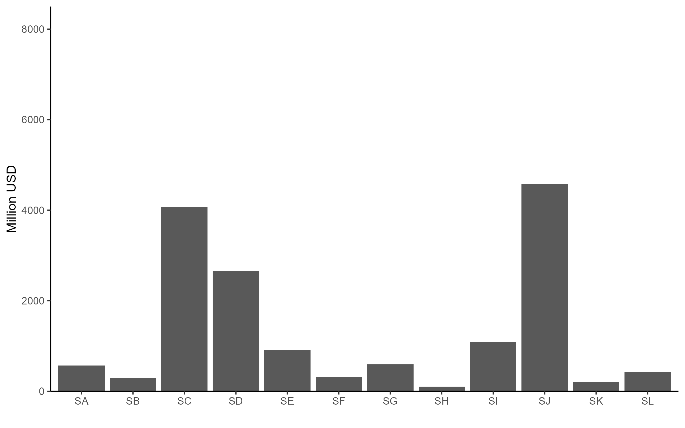
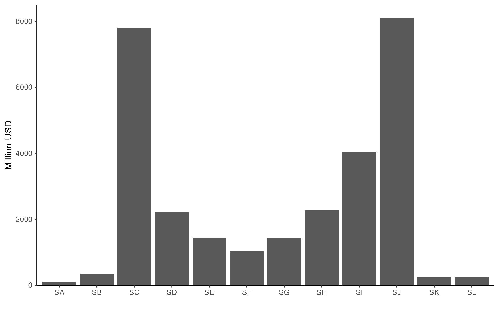
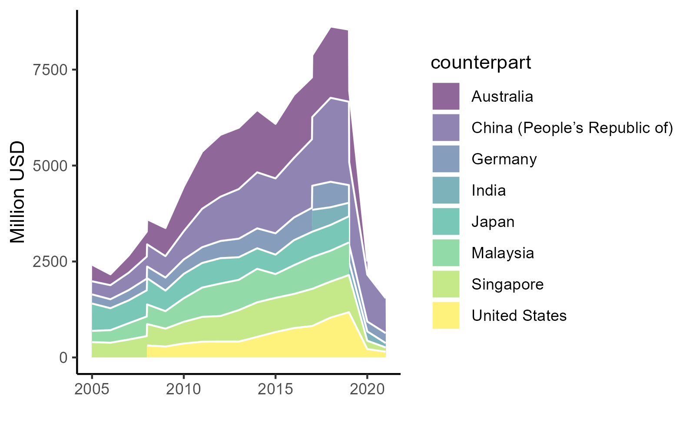
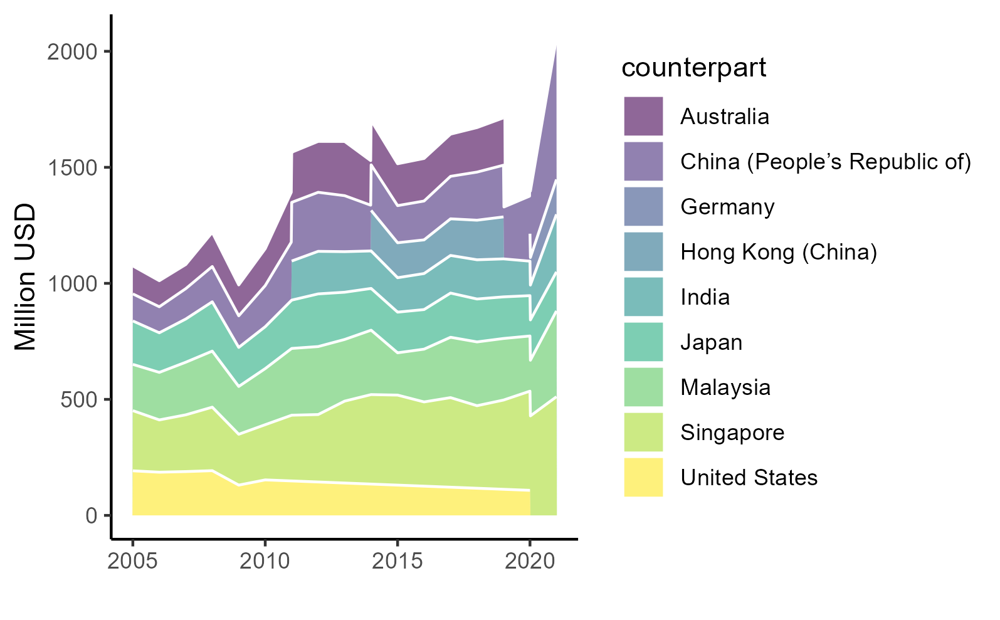
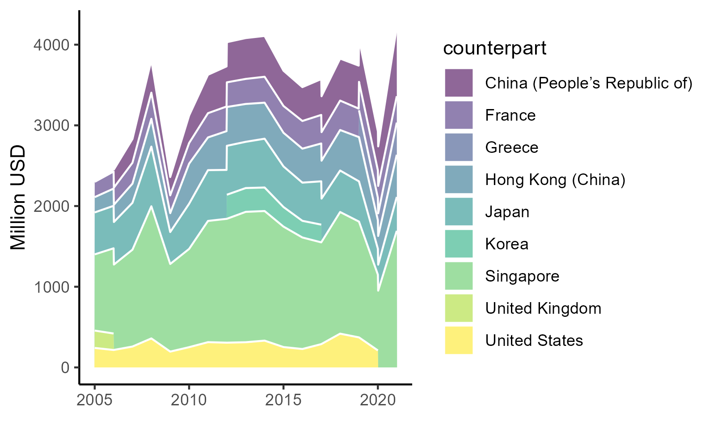
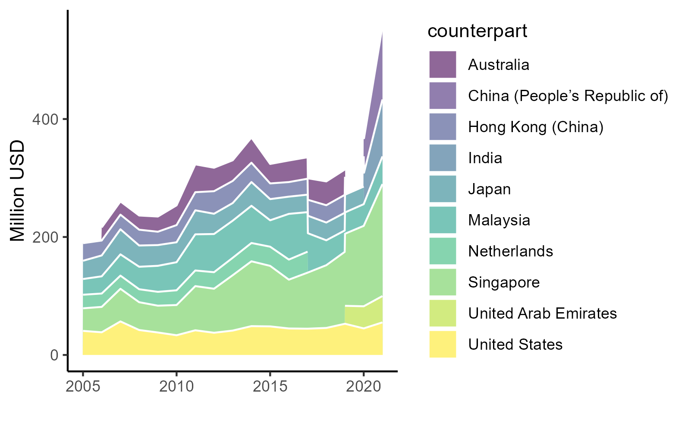
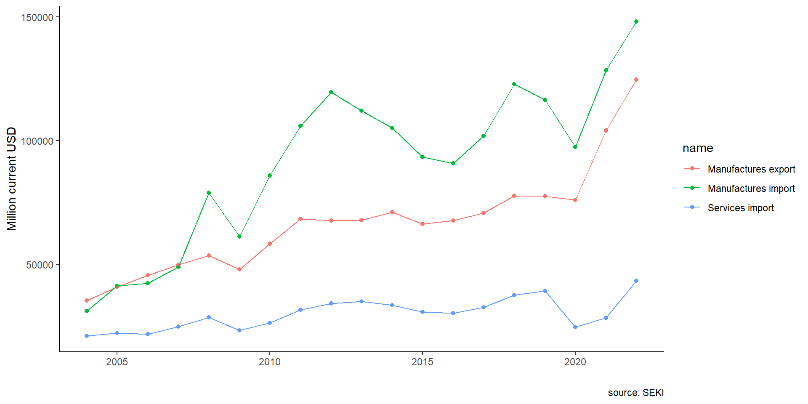

| all | IDN | |||||
|---|---|---|---|---|---|---|
| Mean | SD | Histogram | Mean | SD | Histogram | |
| value added | 4181.70 | 6845.40 | ▇▁ | 8150.56 | 12191.95 | ▇▁ |
| output | 15930.67 | 21741.55 | ▇▁ | 21529.33 | 29317.48 | ▇▁▁ |
| domestic services | 2804.36 | 3889.86 | ▇▂▁ | 3735.21 | 4176.07 | ▇▅▁ |
| foreign services | 845.74 | 1730.29 | ▇ | 420.05 | 339.95 | ▇▆▄▃▂▁ |
| domestic goods | 5213.09 | 9008.54 | ▇▁ | 7123.05 | 12296.21 | ▇▁ |
| foreign goods | 7057.46 | 9172.47 | ▇▁▁ | 10240.63 | 12983.59 | ▇▁▁ |
| for. services share | 5.76 | 3.70 | ▃▇▃▁ | 2.45 | 1.34 | ▇▆▆▇▄▃▂▂▁ |
| dom. services share | 18.02 | 6.73 | ▂▇▇▇▅▃▁▁ | 18.55 | 5.41 | ▂▆▇▇▅▄▅▃▁ |
| for. goods share | 47.62 | 11.39 | ▁▂▂▅▇▆▄▂▁ | 50.30 | 11.98 | ▁▁▃▇▅▇▅▁▂▁ |
| dom. goods share | 28.37 | 11.11 | ▃▄▇▇▄▂ | 28.60 | 8.57 | ▁▂▂▃▅▇▅▄▂▁ |
Services trade
and the Indonesian third unbundling
Krisna Gupta & Dhany Ratana
CIPS, Politeknik APP Jakarta
July 25, 2024
Indonesian services

Indonesia has always been a net importer of trade. Export services is dominated by tourism, while import services is dominated by logistics and business services.

Indonesian government often concerned with deficit trade, but trade in services has often neglected in the discussion.
But more!
With the ever decreasing cost of trade, separating a value up to tasks level (Baldwin, Freeman, and Theodorakopoulos 2024; Kimura 2018).
Feedback mechanism from the third unbundling may benefits domestic manufacturing (Kimura 2018).
In fact, exporting high-value services directly can be a good strategy for growth.
About the chapter
The state of trade in services in Indonesia
Services as manufacturing inputs
using Input-Output.
services import-manufacturing export cointegration.
Preliminary conclusions
The third unbundling
Unbundling: how much part of the supply chain of production can be traded across border increase the use of comparative advantage (Baldwin 2016; Kimura 2018).
- trade cost: 1st, communication costs: 2nd, face-to-face costs: 3rd.
3 development paths: step-by-step, leap-frogging, feedback (Kimura 2018)
The last two makes services ever more important:
leap-frog to supplying part of a services tasks, or;
Feedback, using services to improve manufacturing.
Services in manufacturing
Melitz (2003): non-trivial trade cost makes small-margin firms lose.
Services can lower this cost: brigde information gap on the market, business customs and regulations in other countries, especially for new firms entering export market (Lodefalk 2014)
In Sweden, firms with higher services embeded in its final products increases its intensity of export (Lodefalk 2014)
In Indonesia, 10 per cent increase in service intensity of a firm increase its productivity by 7 to 8 per cent (Hing and Thangavelu 2023)
Services trade in Indonesia
Trade in services is complicated amid 4 modes (Magiera 2011):
mode 2 & 4 \(\rightarrow\) Visa and KITAS regulations
mode 3 \(\rightarrow\) investment and operational.
Magiera (2011): complicated authorities, unlike goods. Makes it hard to discuss Deep Trade Agreements (Syahputri and Gupta 2024).
IJEPA: no evidence it improves services trade (Syahputri and Gupta 2024)
Data: BaTIS
First launched in 2017 by OECD and WTO (Liberatore and Wettstein 2021),
Balanced data from two trading partners.
Not very good outside of rich countries.
used to build other databases like TiVA.
| Code | Category description |
|---|---|
| SA | Manufacturing services on physical inputs owned by others |
| SB | Maintenance and repair services n.i.e. |
| SC | Transport |
| SD | Travel |
| SE | Construction |
| SF | Insurance and pension services |
| SG | Financial services |
| SH | Charges for the use of intellectual property n.i.e. |
| SI | Telecommunications, computer, and information services |
| SJ | Other business services |
| SK | Personal, cultural and recreational services |
| SL | Government goods and services n.i.e. |
Trade by partner,2021


Singapore is the most important partner in trade in services for Indonesia. China, on the other hand, is the main buyer of Indonesia’s services export
Trade by sector, 2021


Indonesia’s imports dominates exports in all categories bar travel (SD). Additionally, the highest traded services in Indonesia are transport (SC) and business services (SJ)
Top services: travel


The only net export got punished by the pandemic. China+Australia important export destination,
Top services: transport


Singapore’s dominance is apparent here. Very important for manufactures trade.
Top services: ICT services


Perhaps the most relevant services to leap-frogging and feedback. Also the highest beneficiary of the pandemic.
Top services: biz services
Other business services includes consulting management, research and development, and trade-related services (Liberatore et al. 2021)
All in all
Singapore is important for Indonesia
Travel carry the trade balance. Most travel exports comes mainly from tourism, which is bad since the pandemic punishes it disproportionately.
Trade agreements play a huge role in improving trade in services.
Measures that affects movement of natural persons (e.g., qualification harmonization), and other non-tariff measures like computing requirement and investment list are crucial as trade in services can be done in 4 different modes that got affected by these rules.
Manufacturing feedback
We look at the role of imported services to Indonesian manufacturing, a sector Indonesian government tries to revive for a long time.
Two approaches: input-output table and ARDL cointegration.
Input-Output utilises ICIO data (OECD 2023), the ARDL uses Indonesian Central Bank data (Bank Indonesia, n.d.)
ICIO
Let there be a nest of product from some degree of substitutable services input:
\[ Y_{it}=f(AS^D_{it},AS^F_{it}) \]
for all \(i=\) manufacturing sectors and \(t=year\). A is the nest multiplier, \(S^D_i\) and \(S^F_i\) are total services purchased by industry \(i\), domestically and imported respectively.
Assuming a Cobb-Douglass relationship, a log-linearized version thus
\[ y_{it}=a+\beta_d s^D_{it}+\beta_f s^F_{it}+\varepsilon_{it} \]
ICIO
To construct the dataset for the regression, we aggregate non-factor inputs from each manufacuring sectors, separated by whether it is from Indonesia or from other countries. All inputs from foreign countries are aggregated into foreign.
For comparison purpose, we also do the same for 4 countries in the region, namely Singapore, Malaysia, Thailand and Vietnam. Data from these 5 countries are then concatenated to add one more dimension, countries. Summary statistics on the data is shown in Table 2.
Summary
ICIO
| all | IDN | SGP | VNM | THA | MYS | |
|---|---|---|---|---|---|---|
| + p < 0.1, * p < 0.05, ** p < 0.01, *** p < 0.001 | ||||||
| lfs | 0.159 | -0.207 | 0.172 | 0.358** | -0.175* | 0.082 |
| (0.159) | (0.283) | (0.170) | (0.094) | (0.062) | (0.264) | |
| lds | 0.708*** | 0.735* | 0.587* | 0.479*** | 1.112*** | 0.808*** |
| (0.157) | (0.280) | (0.209) | (0.086) | (0.066) | (0.173) | |
| Num.Obs. | 1520 | 304 | 304 | 304 | 304 | 304 |
| R2 | 0.825 | 0.863 | 0.984 | 0.993 | 0.992 | 0.945 |
| R2 Within | 0.658 | 0.423 | 0.780 | 0.984 | 0.952 | 0.727 |
all has country and sector dummy, while country regressions only has sector dummy.
For value added, log foreign services (lfs) do not seem to be significant bar Vietnam, while log domestic services (lds) generally significant.
OLS
| all | IDN | SGP | VNM | THA | MYS | |
|---|---|---|---|---|---|---|
| + p < 0.1, * p < 0.05, ** p < 0.01, *** p < 0.001 | ||||||
| lfs | 0.221+ | -0.070 | 0.179 | 0.471** | 0.112+ | 0.155 |
| (0.105) | (0.141) | (0.138) | (0.135) | (0.062) | (0.166) | |
| lds | 0.745*** | 0.910*** | 0.640** | 0.547*** | 0.865*** | 0.745*** |
| (0.103) | (0.129) | (0.166) | (0.123) | (0.062) | (0.103) | |
| Num.Obs. | 1520 | 304 | 304 | 304 | 304 | 304 |
| R2 | 0.962 | 0.954 | 0.993 | 0.995 | 0.996 | 0.987 |
| R2 Within | 0.921 | 0.880 | 0.914 | 0.990 | 0.973 | 0.891 |
For output, log foreign services (lfs) do not seem to be significant bar Vietnam, while log domestic services (lds) generally significant.
Indonesia’s low share of foreign services seem to be the reason why it has no correlation with both output and value added.
ARDL
We complement previous analysis with ARDL cointegration analysis by using aggregate export and import data from the central bank (selo?)
\[\begin{align} exM_t&=\alpha_0+\alpha_1 exM_{t-1}+\alpha_2 imM_t+\alpha_3 imSev_t+\nu_i \\ exM_t&=\gamma_0+\gamma_1 exM_{t-1}+\gamma_2 imM_t+\gamma_3 imSev_t+ \gamma_4 imM_{t-1}+\gamma_5 imSev_{t-1}+\upsilon_i \\ pdb_t&=\delta_0+\delta_1 pdb_{t-1}+\delta_2 imM_t+\delta_3 imSev_t+\omega_i \\ pdb_t&=\theta_0+\theta_1 pdb_{t-1}+\theta_2 imM_t+\theta_3 imSev_t+ \theta_4 imM_{t-1}+\theta_5 imSev_{t-1}+\eta_i \end{align}\]
where \(exM\) is log manufacturing exports, \(pdb\) is log manufacturing GDP, \(imM\) is log manufacturing imports and \(imSev\) is log services imports, all for Indonesian level in time \(t\), where \(t\) is from 2005 to 2023.
Specifications that we run are ARDL(1,0,0), the least restrictive, and ARDL(1,1,1) which is considered from AIC, BIC and RMSE (Pesaran and Smith 1995; Natsiopoulos and Tzeremes 2022).
ARDL
Figure 13: Indonesian trade dynamics
ARDL
| Mean | Median | SD | Histogram | |
|---|---|---|---|---|
| log value added | 7.62 | 7.67 | 1.26 | ▁▁▃▅▇▆▃▁ |
| log output | 9.01 | 9.06 | 1.21 | ▁▂▄▆▇▄▂ |
| log foreign services | 5.98 | 6.00 | 1.21 | ▂▄▇▇▄▁ |
| log domestic services | 7.23 | 7.23 | 1.25 | ▁▁▃▅▇▆▄▂▁ |
ARDL
| Export 1 | Export 2 | GDP 1 | GDP 2 | |
|---|---|---|---|---|
| + p < 0.1, * p < 0.05, ** p < 0.01, *** p < 0.001 | ||||
| (Intercept) | 0.704 | 1.354+ | 0.112 | 0.243+ |
| (0.724) | (0.692) | (0.127) | (0.128) | |
| L(exM, 1) | 0.676** | 1.135*** | ||
| (0.222) | (0.177) | |||
| imM | 0.273 | 0.307* | -0.003 | -0.023 |
| (0.184) | (0.127) | (0.020) | (0.022) | |
| imSev | -0.106 | -0.130 | 0.098** | 0.110*** |
| (0.247) | (0.146) | (0.029) | (0.024) | |
| L(imM, 1) | -0.151 | 0.031 | ||
| (0.166) | (0.023) | |||
| L(imSev, 1) | -0.485* | -0.083* | ||
| (0.182) | (0.030) | |||
| L(pdb, 1) | 0.917*** | 0.938*** | ||
| (0.024) | (0.022) | |||
| Num.Obs. | 18 | 18 | 18 | 18 |
| R2 | 0.881 | 0.967 | 0.997 | 0.998 |
| Log.Lik. | 32.291 | 43.772 | 70.818 | 76.085 |
| RMSE | 0.04 | 0.02 | 0.00 | 0.00 |
ARDL
Indonesia’s current import service does not seem to contribute much to the country’s manufacturing export.
This corroborates findings in ICIO regression.
Indonesian firms does not seem to have much in house services to begin with, and those who do are only a small fraction of very productive firms (Hing and Thangavelu 2023).
All in all
By itself, Indonesian services export relies on travel. Looks to be net-importing for some time.
Services content in manufacturing seems to be an untapped potential: increasing services content may be beneficial for Indonesian manufacturing thus the feedback mechanism a la Kimura (2018).
Exports will be needed if manufacturing to increase its services content beyond transport to justify the cost.
Conclusion
This chapter arguably met its goal in discussing Indonesia’s service trade.
while ICIO is not the best, it remains the best data to look at services content in manufacturing (and services too, in fact i.e., the leap-frog)
We may need to fine-tune the discussion, so feedback is welcomed!
References
Baldwin, Richard. 2016. The Great Convergence: Information Technology and the New Globalization. Book. Belknap Press of Harvard University Press.
Baldwin, Richard, Rebecca Freeman, and Angelos Theodorakopoulos. 2024. “Deconstructing Deglobalization: The Future of Trade Is in Intermediate Services.” Journal Article. Asian Economic Policy Review 19 (1): 18–37. https://doi.org/https://doi.org/10.1111/aepr.12440.
Bank Indonesia. n.d. “Statistik Ekonomi Dan Keuangan Indonesia.” Dataset. Bank Indonesia,. https://www.bi.go.id/id/statistik/ekonomi-keuangan/seki/Default.aspx#headingFour.
Hing, Vutha, and Shandre Mugan Thangavelu. 2023. “Does Servicification Enhance Firm Productivity? Evidence from Indonesia.” Journal Article. Journal of Southeast Asian Economies 40 (3): 299–317. https://remote-lib.ui.ac.id:2065/stable/27278631.
Kimura, Fukunari. 2018. “Unbundling Regimes and Development Strategies in ASEAN: Old Issues and New Challenges.” Journal Article. Southeast Asian Economies 35 (1): 13–21. https://doi.org/10.1355/ae35-1c.
Liberatore, Antonella, Rodolfo Ostolaza, Malik Bani Hani, Silvia Amiel, Maria Fernanda L’Hopital, Markie Muryawan, Vysaul Nyirongo, and Habibur Khan. 2021. “C.6 Trade in Services Classifications.” Report. International Monetary Fund. https://www.imf.org/external/pubs/ft/bop/2021/pdf/VM2/21-05.pdf.
Liberatore, Antonella, and Steen Wettstein. 2021. “The OECD-WTO Balanced Trade in Services Database (BaTIS).” Report. OECD/WTO. https://www.oecd.org/content/dam/oecd/en/data/methods/OECD-WTO-Balanced-Trade-in-Services-database-methodology-BPM6.pdf.
Lodefalk, Magnus. 2014. “The Role of Services for Manufacturing Firm Exports.” Journal Article. Review of World Economics / Weltwirtschaftliches Archiv 150 (1): 59–82. http://remote-lib.ui.ac.id:2063/stable/44211761.
Magiera, Stephen. 2011. “Indonesia’s Investment Negative List: An Evaluation for Selected Services Sectors.” Journal Article. Bulletin of Indonesian Economic Studies 47 (2): 195–219.
Melitz, Marc J. 2003. “The Impact of Trade on Intra-Industry Reallocations and Aggregate Industry Productivity.” Journal Article. Econometrica 71 (6): 1695–725. https://doi.org/10.1111/1468-0262.00467.
Natsiopoulos, Kleanthis, and TNickolaos G Tzeremes. 2022. “ARDL Bounds Test for Countegration: Replicating the Pesaran Et Al. (2001) Results for the UK Earnings Equation Using r.” Journal Article. Journal of Applied Econometrics 37 (5): 22. https://doi.org/doi.org/10.1002/jae.2919.
OECD. 2023. “OECD Inter-Country Input-Output Database.” Dataset. http://oe.cd/icio.
Pesaran, M. Hashem, and Ron Smith. 1995. “Estimating Long-Run Relationships from Dynamic Heterogeneous Panels.” Journal Article. Journal of Econometrics 68 (1): 79–113. https://doi.org/https://doi.org/10.1016/0304-4076(94)01644-F.
Syahputri, Evanti Andriani, and Krisna Gupta. 2024. “Analysis of the Effect of Indonesia-Japan Economic Partnership Agreement (IJEPA) on the Trade in Service Sector in Indonesia.” Journal Article. Jurnal Manajemen Industri Dan Logistik 8 (1). https://doi.org/10.30988/jmil.v8i1.1356.